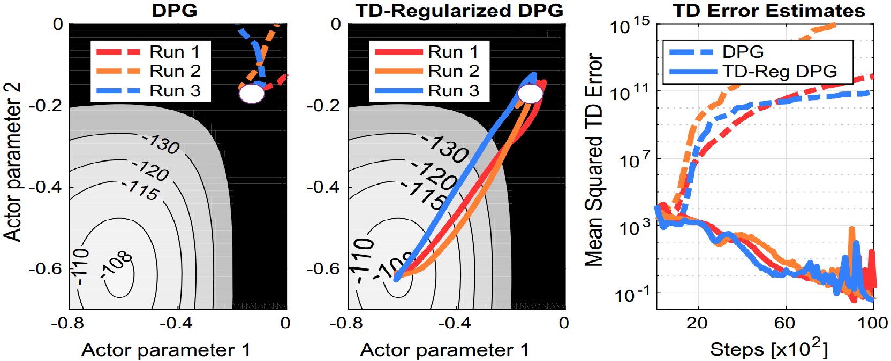

|
Monitored Markov Decision Processes In RL, an agent learns to perform a task by interacting with an environment and receiving rewards for its actions. However, the assumption that rewards are always observable is often not applicable in real-world problems. Consider the situation where the agent is tasked with household chores, and the quality of its behavior is provided through rewards from the homeowner and smart sensors. What if the reward is not always observable, e.g., if the owner is be present or the sensors are malfunctioning? In such situations, the agent should not interpret the lack of reward as meaning that all behavior is equally desirable. Neither should it think that avoiding monitoring or intentionally damaging sensors is an effective way to avoid negative feedback. Further, the agent may need to reason about how to seek the most useful feedback, such as planning exploratory actions when the owner is home or in well-monitored rooms.
References
Monitored Markov Decision Processes Learning and Transfer of Exploration Policies Classic RL exploration is task-driven (the extrinsic reward is the main drive of exploration) or makes use of myopic intrinsic rewards (they depends the most promising short-term actions). Furthermore, learning follows a tabula-rasa approach — the agent learns from scratch, assuming isolated environments and no prior knowledge or experience.
In a preliminary work published in Algorithms, we presented a novel approach that (1) plans exploration actions far into the future by using a long-term visitation count, and (2) decouples exploration and exploitation by learning a separate function assessing the exploration value of the actions. In our NeurIPS paper, we proposed a novel framework to pre-train and transfer exploration in a task-agnostic manner. The agent first learns to explore across many environments, driven only by a novel intrinsic rewards and without any extrinsic goal. Later on, the agent transfers the learned exploration policy to better explore new environments when solving tasks. The key idea of our framework is that there are two components of exploration: (1) an agent-centric component encouraging exploration of unseen parts of the environment based on an agent's belief; (2) an environment-centric component encouraging exploration of inherently interesting objects. The results of our approach were extremely promising, and open several avenues of research. Is there a universal formulation of intrinsic curiosity and interestingness? How important are state representation to learn / transfer exploration policies? Can we use out-of-domain data — e.g., collected from the internet — to train exploration policy?References
Long-Term Visitation Value for Deep Exploration in Sparse Reward Reinforcement Learning
Interesting Object, Curious Agent: Learning Task-Agnostic Exploration Learning and Transfer of State Representations In computer vision and natural language processing, recent advances have allowed to exploit massive amounts of data to pre-train perception models. These models can be successfully used "off-the-shelf" to solve many different downstream applications without any further training. On the contrary, in RL many algorithms still follow a "tabula-rasa" paradigm where the agent performs millions or even billions of in-domain interactions with the environment to learn task-specific visuo-motor policies from scratch.
By investigating these fundamental questions, we succeeded at making a single off-the-shelf vision model — trained on out-of-domain datasets — to be competitive with or even outperform ground-truth features on all the four control domains. As efficient compact state features are hard to estimate in unstructured real-world environments and the agent needs to rely on raw vision input, our model can be extremely beneficial by dramatically reducing the data requirement and improving the policy performance. References
The (Un)Surprising Effectiveness of Pre-Trained Vision Models for Control Improving Actor-Critic Stability  Actor-critic methods can achieve incredible performance but they are also prone to instability. This is partly due to the interaction between the actor and the critic during learning: an inaccurate step taken by one might adversely affect the other and destabilize the learning.
References
TD-Regularized Actor-Critic Methods RL Applied to Robotics: The Tetherball Platform Motor skills learning is an important challenge in order to endow robots with the ability to learn a wide range of skills and solve complex tasks. In the last decade, RL has been shown the ability to acquire a variety of skills, ranging from the game ball-in-a-cup to walking and jumping.
References
Reinforcement Learning vs Human Programming in Tetherball Robot Games Multi-Objective RL Many real-world control applications are characterized by the presence of multiple conflicting objectives. In these problems, the goal is to find the Pareto frontier, a set of policies representing different compromises among the objectives.
References
Manifold-based Multi-objective Policy Search with Sample Reuse
Multi-objective Reinforcement Learning through Continuous Pareto Manifold Approximation
Policy Gradient Approaches for Multi-Objective Sequential Decision Making |